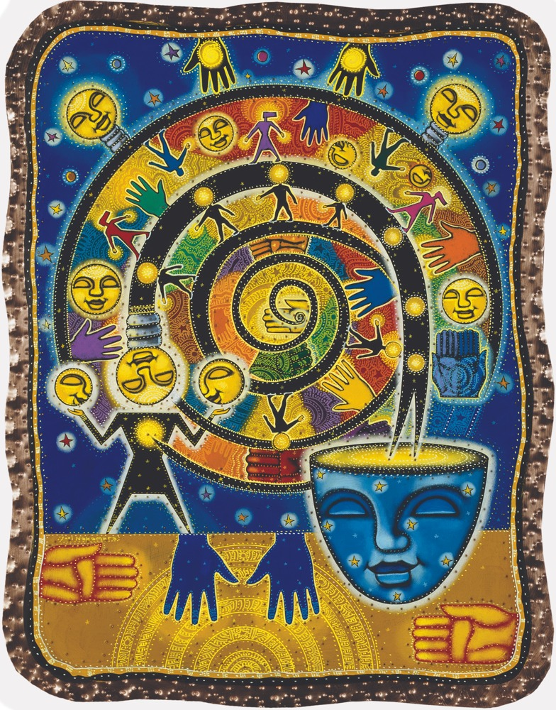

Mark Von Ulrich
Which bodily or spatial change makes the argument visible?
13 references, biography, early Mac raster brief and symbolic directing guide.
People whose ideas we call on, turned into catalogues, sourced biographies and one-page agent briefs.
Each profile answers one directing question. Give an agent the profile's AGENT-DIRECTION.txt with a section brief and ask what that person would add. See README.md for how to call on a profile and how to build a new one.
Which bodily or spatial change makes the argument visible?
13 references, biography, early Mac raster brief and symbolic directing guide.

What story can this object hold inside it?
54 references, eight magazine articles in context, biography and process, painted-panel brief and directing guide.

What respectable thing can we cut out, make misbehave, and turn into the next thing?
30 cited animation pieces, 8 public-domain source plates, the psychology of the symbols, sourced biography, cut-out brief and directing guide.
How do we measure the claim in public, and show the machinery?
28 sourced devices from Manufacturing Consent and The Corporation, critics for and against, and a pass over the Romancing the Atom test reel. No frames: our own drawing above.
What can this object do with its own body, and what is its job?
16 indexed posts, a shot list and fourteen recipes from the paperclip film, his own process notes, and a marker-on-paper brief. No frames: our own drawing above.